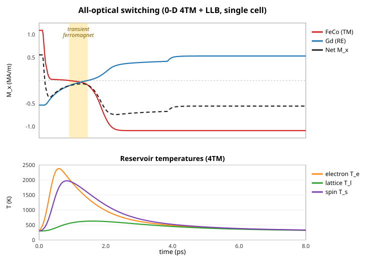

Magneto-Optic Switching
The flagship application of MagnetoPhotonic is all-optical magnetization switching: an ultrafast laser pulse deposits heat in a ferrimagnetic GdFeCo film, and the coupled thermal + magnetization dynamics deterministically reverse the magnetization — no applied field required.
The physics model
Three pieces are coupled at each material cell:
- Four-temperature model (4TM) — electron, lattice, and two spin baths (FeCo "TM" and Gd "RE"), with the electron bath integrated in the energy variable
½γₑTₑ²for positivity. - Landau–Lifshitz–Bloch (LLB) magnetization for both sublattices — full-vector precession, transverse/longitudinal damping, a Brillouin mean-field equilibrium, and the validation-matched TM-first / RE-delayed branch-selection channel that produces the deterministic switch.
- Magneto-optic gyration — an off-diagonal (
Ey↔Ez) ADE driven by the magnetization, giving the Kerr/Faraday response in the optical field.
All parameters live on a single tunable struct; MagnetoOpticModel() uses the empirical GdFeCo set, and any parameter can be overridden:
model = MagnetoOpticModel(; T_Curie=560.0, Q_voigt_TM=0.025, alpha0_TM=0.04)The parameter container is FerrimagnetParameters, a general two-sublattice ferrimagnet model using the conventional TM/RE labels. The calibrated GdFeCo set is available as a preset, and the legacy GdFeCoParameters name remains an alias:
gd = gdfeco_parameters()
custom = ferrimagnet(:gdfeco; Ms_TM=1.0e6, Ms_RE=0.48e6, Q_voigt_TM=0.018)
model = MagnetoOpticModel(params=custom)Every constant that was previously baked into the GdFeCo constructor is now a keyword: sublattice moments and spins, exchange constants, anisotropy, thermal couplings and timescales, Curie/compensation temperatures, Voigt coefficients, and pump/probe optical indices. That makes GdFeCo a preset input rather than the package's only magnetic material.
Running a pump–relax switching experiment
run_pump_probe_sim builds the device, runs the pump FDTD with the coupled multiphysics, then a field-free cool-down (relaxation) during which the magnetization rebuilds on the reversed branch:
using MagnetoPhotonic
config = SimConfig(
grid = GridConfig(xlim=(0.0,1.5e-6), ylim=(-0.4e-6,0.4e-6), zlim=(-0.4e-6,0.4e-6),
dx=0.1e-6, courant=0.3),
source = SourceConfig(component=:Ez, amplitude=1e2, tau=15e-15, t0=45e-15),
device = DeviceConfig(wg_width=0.3e-6, wg_height=0.3e-6, film_thickness=0.2e-6),
model = ModelConfig(multiphysics_subcycle=4),
steps = 150, precision = Float64,
)
res = run_pump_probe_sim(config; model=MagnetoOpticModel(),
thermal_kick=1150.0, relax_steps=8000)material cells = 32
mean m_TM_x (FeCo) : 1.000 -> -0.990 # FeCo reversed
mean m_RE_x (Gd) : -0.998 -> 0.968 # Gd reversed
switched fraction = 1.0 # complete, deterministic switchThe returned named tuple includes the initial/final magnetization (m_TM_x0, m_TM_x, m_RE_x0, m_RE_x), the final temperatures (Te), the pump-phase energies, and the switched_fraction.
The asymmetric sublattice reversal (0-D)
To see the order of the reversal cheaply, examples/aos_switching_0d.jl drives a single GdFeCo cell with the four-temperature model directly (an absorbed-power Gaussian heats the electron bath, which feeds the two spin baths). Because the FeCo (TM) and Gd (RE) baths demagnetize on different timescales (≈100 fs vs ≈430 fs) and the branch-selection channel gates the Gd reversal on the FeCo one, FeCo reverses first and Gd follows — opening the transient-ferromagnetic window that is the fingerprint of GdFeCo all-optical switching:
FeCo (TM) m_x: +0.992 → -0.990 zero crossing @ 0.92 ps
Gd (RE) m_x: -0.972 → +0.968 zero crossing @ 1.47 ps
electron T_e peak = 2381 K
The top panel plots the physical magnetization M_x = M_s·m of each sublattice (and the net), with the transient-ferromagnetic window shaded; the bottom panel is the four-temperature reservoir evolution (electron T_e peaking ≈2400 K, then the slower lattice and spin baths). This 0-D trajectory reproduces the qualitative reversal sequence of the lab reference GdFeCo_Magnetization_Switching.png. Note that the reference figure is a spatial film average of the full device run, so its switch is partial (only the hot core of the beam reverses) — whereas a single fully-pumped cell switches completely.
On a small CPU-scale grid the laser fluence needed for switching is hard to deposit in a few EM steps. thermal_kick=T sets the post-pump electron/spin temperature directly, standing in for the absorbed pump energy so the cool-down can be studied cheaply. On a full-scale (GPU) run the heat comes from the EM absorption itself.
Low-level coupled FDTD path
For custom geometries you can drive the fully-coupled solver directly. With a MagnetoOpticModel attached to a material, FDTDState turns on, each step: Yee + CPML, ADE dispersion, magneto-optic gyration, and (every multiphysics_every steps) the 4TM + LLB update.
grid = uniform_grid((0.0,1.5e-6), (-0.4e-6,0.4e-6), (-0.4e-6,0.4e-6), 0.1e-6)
scene = Scene()
add_shape!(scene, Box(0.0,1.5e-6, -0.15e-6,0.15e-6, -0.15e-6,0.15e-6), Material("Si3N4"; epsr=4.0))
add_shape!(scene, Box(0.7e-6,0.8e-6, -0.15e-6,0.15e-6, -0.15e-6,0.15e-6),
Material("GdFeCo"; epsr=1.0, model=MagnetoOpticModel()))
geo = rasterize(scene, grid; subpixel=1)
p = FDTDParams(800e-9)
pulse = GaussianPulse(; amplitude=1.0, tau=15e-15, t0=45e-15, omega=2pi*p.c0/800e-9)
state = FDTDState(grid, geo; dt=cfl_dt(grid, p; courant=0.3), params=p,
source=(pulse, :Ez, (3, 4, 4)), model=MagnetoOpticModel(),
n_pml=6, enable_magneto_optic=true, multiphysics_every=4, T=Float64)
run!(state, 300) # pump
for _ in 1:6000; relax_step!(state, 1e-15); end # cool-down (4TM + LLB only)Reproducing the lab reference
The original production CUDA scripts (Main_Research/, Convergence_study/, Device_Design/) remain the validation reference. MagnetoPhotonic reproduces their physics and algorithms on CPU; matching the full quantitative numbers at device scale (and GPU execution) is the remaining work — see the roadmap on the project home page.